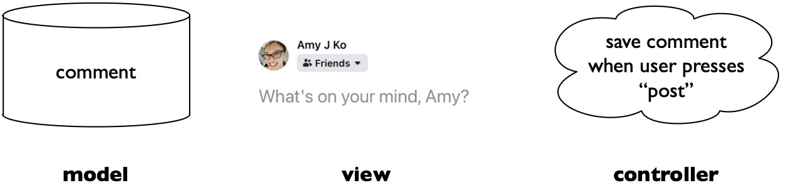

While the previous chapter discussed many of the seminal interaction paradigms we have invented for interacting with computers, we've discussed little about how all of the widgets, interaction paradigms, and other user interface ideas are actually implemented as software. This knowledge is obviously important for developers who implement buttons, scroll bars, gestures, and so on, but is this knowledge important for anyone else?
I argue yes. First, a precise understanding of user interface implementation allows designers to have a precise understanding of user interface behavior. This helps designers and engineers who think of user interface components as the building blocks of a user interface to analyze limitations of interfaces, predict edge cases in their behavior, and discuss their behavior precisely. Knowing, for example, that a button only invokes its command after the mouse button is released allows one to reason about the assumptions a button makes about ability. The ability to hold a mouse button down, for example, isn't something that all people have, whether due to limited finger strength, motor tremors that lead to accidental button releases, or other motor-physical limitations. A user interface designer or engineer knowing these low-level implementation details is like violinist knowing whether a bow's strings are made from synthetic materials or Siberian horse tail. These details allow you to fully control what you make and how it behaves.
Knowledge of user interface implementation might also be important if you want to invent new interface paradigms. A low-granularity of user interface implementation knowledge allows you to see exactly how current interfaces are limited, and empowers you to envision new interfaces that don't have those limitations. For example, when Apple redesigned their keyboards to have shallower depth, their design team needed deeper knowledge than just "pushing a key sends a key code to the operating system." They needed to know the physical mechanisms that afford depressing a key, the tactile feedback those mechanisms provide, and the auditory feedback that users rely on to confirm they've pressed a key. Expertise in these physical qualities of the hardware interface of a keyboard was essential to designing a new keyboard experience.
Precise technical knowledge of user interface implementation also allows designers and engineers to have a shared vocabulary to communicate about interfaces. Designers should feel empowered to converse about interface implementation with engineers, knowing enough to critique designs and convey alternatives. Without this vocabulary and a grasp of these concepts, engineers retain power over user interface design, even though they aren't trained to design interfaces.
What is this knowledge of implementation? I'm not proposing that everyone memorize and understand, for example, the source code implementations of all of Windows or macOS's widgets. I'm talking about a level of knowledge at the architectural level, which involves understandings patterns of control and data flow that govern user interface behavior.
To illustrate this notion of architecture, let's return to the example of a graphical user interface button. We've all used buttons, but rarely do we think about exactly how they work. Here is the architecture of a very simple button:

This is a simple state machine with two states: mouse up (on the left) and mouse down (on the right). Events cause the machine to transition between states: when the button receives a mouse down event, it transitions to the down state. When it receives a mouse up event, it transitions to the up state and also executes its command. This is about as simple as buttons get.
Of course, graphical user interface buttons in modern operating systems are actually much more complex. Consider, for example, what happens if the button is in a down state, but the mouse cursor moves outside the boundary of the button and then a mouse up event occurs. When this happens, it transitions to the mouse up state, but does not execute the button's command. (Try this on a touchscreen: tap on a button, slide your finger away from it, then release, and you'll see the button's command isn't executed). If the button can be disabled, then there's an entirely different state of disabled in which the button never changes states in response to events. If the button supports touch input, then a button's state machine also needs to handle touch events. All of these additional behaviors add more complexity to a button's state machine, but ultimately, it is still state machine.
All user interface widgets are implemented in similar ways, defining a set of states and events that cause transitions between those states. Scroll bar handles respond to mouse down, drag, and mouse up events, text boxes respond to keyboard events, links respond to mouse down and up events. Even text in a web browser or text editor response to mouse down, drag, and mouse up events to enter a "text selected state".
A nearly ubiquitous way to implement these state machines is to follow a model-view-controller (MVC) architecture. One can think of MVC as a division of responsibilities between storing data, showing data, and manging the interaction between the storage and the display. For example, think about the signs that are often displayed on gas station or movie theaters. Someone is responsible for writing and storing the content that will be shown on the signs. Someone else is responsible for putting the content on the signs. And someone is in charge of managing the communication between the two, such as a manager, who listens decides when the sign will change. In the same way, MVC architectures in user interfaces take an individual component of an interface (e.g., a button, a form, a progress bar, or some other widget) and divide its implementation into three parts:
Now, if every individual widget in a user interface is its own self-contained model-view-controller architecture, how are all of these individual widgets composed together into a user interface? There are three big ideas that stitch together individual widgets into an entire interface.
First, all user interfaces are structured as hierarchies in which one widget can contain zero or more other "child" widgets, and each widget has a parent, except for the "root" widget (usually a window). For instance, here's the Facebook post UI we were discussing earlier and its corresponding hierarchy:

Notice how there are some components in the tree above that aren't visible in the UI (the "post", the "editor", the "special input" container). Each of these are essentially containers that group components together. This brings us to the second big idea of layout, in which the children of each component are organized spatially according to some layout rule. For example, the special input widgets are laid out in a horizontal row within the special inputs container and the special inputs container itself is laid out right aligned in the "editor" container. Each component has its own layout rules that govern the display of its children.
Finally, event propagation is the process by which user interface events move from a physical device to a particular user interface component. Each device has its own process, because it has its own semantics. For instance:
Even speech interfaces emit events. For example, digital voice assistants are continuously listening for activation commands such as "Hey Siri" or "Alexa." After these are detected, they begin converting speech into text, which is then matched to one or more commands. Applications that expose a set of commands then receive events that trigger the application to process the command. Therefore, the notion of input events isn't inherently tactile; it's more generally about translating low-level inputs into high-level commands.
While the basic ideas presented above are now ubiquitous in desktop and mobile operating systems, the field of HCI has rapidly innovated beyond these original ideas. For instance, much of the research in the 1990's focused on building more robust, scalable, flexible, and powerful user interface toolkits for building desktop interfaces. The Amulet toolkit was one of the most notable of these, offering a unified framework for supporting graphical objects, animation, input, output, commands, and undo (Myers et al. 1997). At the same time, there was extensive work on constraint systems, which would allow interface developers to declaratively express rules the interface must follow (e.g., this button should always be next to this other button) (Bharat and Hudson 1995, Hudson and Smith 1996). Other projects sought to make it easier to "skin" the visual appearance of interfaces without having to modify a user interface implementation (Hudson and Smith 1997). Research in the 2000's shifted to deepen these ideas. For example, some work investigated alternatives to component hierarchies such as scene graphs (Huot et al. 2004) and views across multiple machines (Lecolinet 2003), making it easier to build highly animated and connected interfaces. Some works deepened architectures for supporting undo and redo (Edwards et al. 2000). Many of these ideas are now common in modern user interface toolkits, especially the web, in the form of CSS and it's support for constraints, animations, and layout separate from interface behavior.
Other research has looked beyond traditional WIMP interfaces, creating new architectures to support new media. The DART toolkit, for example, invented several abstractions for augmented reality applications (Gandy and MacIntyre 2014). Researchers contributed architectures for digital ink applications (Hong and Landay 2000), zoomable interfaces (Bederson et al. 2000), peripheral displays that monitor user attention (Matthews et al. 2004), data visualizations (Bostock and Heer 2009), tangible user interfaces made of physical components (Greenburg and Fitchett 2011, Klemmer et al. 2004), interfaces based on proximity between people and objects (Marquardt et al. 2011), and multi-touch gestures (Kin et al. 2012). Another parallel sequence of work explored the general problem of handling events that are uncertain or continuous, investigating novel architectures and error handling strategies to manage uncertainty (Hudson and Newell 1992, Mankoff et al. 2000, Schwarz et al. 2010). Each one of these toolkits contributed new types of events, event handling, event propagation, synthetic event processing, and model-view-controller architectures tailored to these inputs.
While much of the work in user interface architecture has sought to contribute new architectural ideas for user interface construction, some have focused on ways of modifying user interfaces without modifying their underlying code. For example, one line of work has explored how to express interfaces abstractly, so these abstract specifications can be used to generate many possible interfaces depending on which device is being used (Edwards and Mynatt 1994, Nichols et al. 2002, Nichols et al. 2006). Other systems have invented ways to modify interface behavior by intercepting events at runtime and forcing applications to handle them differently (Eagan et al. 2011). Some systems have explored ways of directly manipulating interface layout during use (Stuerzlinger et al. 2006) and transforming interface presentation (Edwards et al. 1997). More recent techniques have taken interfaces as implemented, reverse engineered their underlying commands, and generated new, more accessible, more usable, and more powerful interfaces based on these reverse engineered models (Swearngin et al. 2017).
A smaller but equally important body of work has investigated ways of making interfaces easier to test and debug. Some of these systems expose information about events, event handling, and finite state machine state (Hudson et al. 1997). Some have invented ways of recording and replaying interaction data with interfaces to help localize defects in user interface behavior (Newman et al. 2010, Burg et al. 2013). Some have even investigated the importance of testing security vulnerabilities in user interfaces, as interfaces like copy and paste transact and manipulate sensitive information (Roesner et al. 2012).
Considering this body of work as a whole, there are some patterns that become clear:
These "laws" of user interface implementation can be useful for making predictions about the future. For example, if someone proposes incorporating a new sensor in a device, subtle details in the sensor's interactive potential may require new forms of testing and debugging, new architectures, and potentially new toolkits to fully leverage its potential. That's a powerful prediction to be able to make and one that many organizations overlook when they ship new devices.
Eytan Adar, Mira Dontcheva, and Gierad Laput. 2014. CommandSpace: modeling the relationships between tasks, descriptions and features. In Proceedings of the 27th annual ACM symposium on User interface software and technology (UIST '14). ACM, New York, NY, USA, 167-176.
Krishna A. Bharat and Scott E. Hudson. 1995. Supporting distributed, concurrent, one-way constraints in user interface applications. In Proceedings of the 8th annual ACM symposium on User interface and software technology (UIST '95). ACM, New York, NY, USA, 121-132.
Benjamin B. Bederson, Jon Meyer, and Lance Good. 2000. Jazz: an extensible zoomable user interface graphics toolkit in Java. In Proceedings of the 13th annual ACM symposium on User interface software and technology (UIST '00). ACM, New York, NY, USA, 171-180.
Brian Burg, Richard Bailey, Amy J. Ko, and Michael D. Ernst. 2013. Interactive record/replay for web application debugging. In Proceedings of the 26th annual ACM symposium on User interface software and technology (UIST '13). ACM, New York, NY, USA, 473-484.
Bostock, Michael, and Jeffrey Heer. Protovis: A graphical toolkit for visualization. IEEE transactions on visualization and computer graphics 15, no. 6 (2009).
James R. Eagan, Michel Beaudouin-Lafon, and Wendy E. Mackay. 2011. Cracking the cocoa nut: user interface programming at runtime. In Proceedings of the 24th annual ACM symposium on User interface software and technology (UIST '11). ACM, New York, NY, USA, 225-234.
W. Keith Edwards, Scott E. Hudson, Joshua Marinacci, Roy Rodenstein, Thomas Rodriguez, and Ian Smith. 1997. Systematic output modification in a 2D user interface toolkit. In Proceedings of the 10th annual ACM symposium on User interface software and technology (UIST '97). ACM, New York, NY, USA, 151-158.
W. Keith Edwards and Elizabeth D. Mynatt. 1994. An architecture for transforming graphical interfaces. In Proceedings of the 7th annual ACM symposium on User interface software and technology (UIST '94). ACM, New York, NY, USA, 39-47.
W. Keith Edwards, Takeo Igarashi, Anthony LaMarca, and Elizabeth D. Mynatt. 2000. A temporal model for multi-level undo and redo. In Proceedings of the 13th annual ACM symposium on User interface software and technology (UIST '00). ACM, New York, NY, USA, 31-40.
Saul Greenberg and Chester Fitchett. 2001. Phidgets: easy development of physical interfaces through physical widgets. In Proceedings of the 14th annual ACM symposium on User interface software and technology (UIST '01). ACM, New York, NY, USA, 209-218.
Jason I. Hong and James A. Landay. 2000. SATIN: a toolkit for informal ink-based applications. In Proceedings of the 13th annual ACM symposium on User interface software and technology (UIST '00). ACM, New York, NY, USA, 63-72.
Scott E. Hudson and Gary L. Newell. 1992. Probabilistic state machines: dialog management for inputs with uncertainty. In Proceedings of the 5th annual ACM symposium on User interface software and technology (UIST '92). ACM, New York, NY, USA, 199-208.
Scott E. Hudson and Ian Smith. 1996. Ultra-lightweight constraints. In Proceedings of the 9th annual ACM symposium on User interface software and technology (UIST '96). ACM, New York, NY, USA, 147-155.
Scott E. Hudson and Ian Smith. 1997. Supporting dynamic downloadable appearances in an extensible user interface toolkit. In Proceedings of the 10th annual ACM symposium on User interface software and technology (UIST '97). ACM, New York, NY, USA, 159-168.
Scott E. Hudson, Roy Rodenstein, and Ian Smith. 1997. Debugging lenses: a new class of transparent tools for user interface debugging. In Proceedings of the 10th annual ACM symposium on User interface software and technology (UIST '97). ACM, New York, NY, USA, 179-187.
Stéphane Huot, Cédric Dumas, Pierre Dragicevic, Jean-Daniel Fekete, and Gerard Hégron. 2004. The MaggLite post-WIMP toolkit: draw it, connect it and run it. In Proceedings of the 17th annual ACM symposium on User interface software and technology (UIST '04). ACM, New York, NY, USA, 257-266.
Kenrick Kin, Bjoern Hartmann, Tony DeRose, and Maneesh Agrawala. 2012. Proton++: a customizable declarative multitouch framework. In Proceedings of the 25th annual ACM symposium on User interface software and technology (UIST '12). ACM, New York, NY, USA, 477-486.
Scott R. Klemmer, Jack Li, James Lin, and James A. Landay. 2004. Papier-Mache: toolkit support for tangible input. In Proceedings of the SIGCHI Conference on Human Factors in Computing Systems (CHI '04). ACM, New York, NY, USA, 399-406.
Amy J. Ko and Brad A. Myers. 2005. Citrus: a language and toolkit for simplifying the creation of structured editors for code and data. In Proceedings of the 18th annual ACM symposium on User interface software and technology (UIST '05). ACM, New York, NY, USA, 3-12.
Eric Lecolinet. 2003. A molecular architecture for creating advanced GUIs. In Proceedings of the 16th annual ACM symposium on User interface software and technology (UIST '03). ACM, New York, NY, USA, 135-144.
Jennifer Mankoff, Scott E. Hudson, and Gregory D. Abowd. 2000. Interaction techniques for ambiguity resolution in recognition-based interfaces. In Proceedings of the 13th annual ACM symposium on User interface software and technology (UIST '00). ACM, New York, NY, USA, 11-20.
Nicolai Marquardt, Robert Diaz-Marino, Sebastian Boring, and Saul Greenberg. 2011. The proximity toolkit: prototyping proxemic interactions in ubiquitous computing ecologies. In Proceedings of the 24th annual ACM symposium on User interface software and technology (UIST '11). ACM, New York, NY, USA, 315-326.
Mark W. Newman, Mark S. Ackerman, Jungwoo Kim, Atul Prakash, Zhenan Hong, Jacob Mandel, and Tao Dong. 2010. Bringing the field into the lab: supporting capture and replay of contextual data for the design of context-aware applications. In Proceedings of the 23nd annual ACM symposium on User interface software and technology (UIST '10). ACM, New York, NY, USA, 105-108.
Tara Matthews, Anind K. Dey, Jennifer Mankoff, Scott Carter, and Tye Rattenbury. 2004. A toolkit for managing user attention in peripheral displays. In Proceedings of the 17th annual ACM symposium on User interface software and technology (UIST '04). ACM, New York, NY, USA, 247-256.
Myers, Brad A., Richard G. McDaniel, Robert C. Miller, Alan S. Ferrency, Andrew Faulring, Bruce D. Kyle, Andrew Mickish, Alex Klimovitski, and Patrick Doane. The Amulet environment: New models for effective user interface software development. IEEE Transactions on software engineering 23, no. 6 (1997): 347-365.
Jeffrey Nichols, Brandon Rothrock, Duen Horng Chau, and Brad A. Myers. 2006. Huddle: automatically generating interfaces for systems of multiple connected appliances. In Proceedings of the 19th annual ACM symposium on User interface software and technology (UIST '06). ACM, New York, NY, USA, 279-288.
Jeffrey Nichols, Brad A. Myers, Michael Higgins, Joseph Hughes, Thomas K. Harris, Roni Rosenfeld, and Mathilde Pignol. 2002. Generating remote control interfaces for complex appliances. In Proceedings of the 15th annual ACM symposium on User interface software and technology (UIST '02). ACM, New York, NY, USA, 161-170.
Stephen Oney, Brad Myers, and Joel Brandt. 2012. ConstraintJS: programming interactive behaviors for the web by integrating constraints and states. In Proceedings of the 25th annual ACM symposium on User interface software and technology (UIST '12). ACM, New York, NY, USA, 229-238.
Stephen Oney, Brad Myers, and Joel Brandt. 2014. InterState: a language and environment for expressing interface behavior. In Proceedings of the 27th annual ACM symposium on User interface software and technology (UIST '14). ACM, New York, NY, USA, 263-272.
Hubert Pham, Justin Mazzola Paluska, Rob Miller, and Steve Ward. 2012. Clui: a platform for handles to rich objects. In Proceedings of the 25th annual ACM symposium on User interface software and technology (UIST '12). ACM, New York, NY, USA, 177-188.
Franziska Roesner, James Fogarty, and Tadayoshi Kohno. 2012. User interface toolkit mechanisms for securing interface elements. In Proceedings of the 25th annual ACM symposium on User interface software and technology (UIST '12). ACM, New York, NY, USA, 239-250.
Julia Schwarz, Scott Hudson, Jennifer Mankoff, and Andrew D. Wilson. 2010. A framework for robust and flexible handling of inputs with uncertainty. In Proceedings of the 23nd annual ACM symposium on User interface software and technology (UIST '10). ACM, New York, NY, USA, 47-56.
Wolfgang Stuerzlinger, Olivier Chapuis, Dusty Phillips, and Nicolas Roussel. 2006. User interface facades: towards fully adaptable user interfaces. In Proceedings of the 19th annual ACM symposium on User interface software and technology (UIST '06). ACM, New York, NY, USA, 309-318.
Amanda Swearngin, Amy J. Ko, and James Fogarty. 2017. Genie: Input Retargeting on the Web through Command Reverse Engineering. In Proceedings of the 2017 CHI Conference on Human Factors in Computing Systems (CHI '17). ACM, New York, NY, USA, 4703-4714.